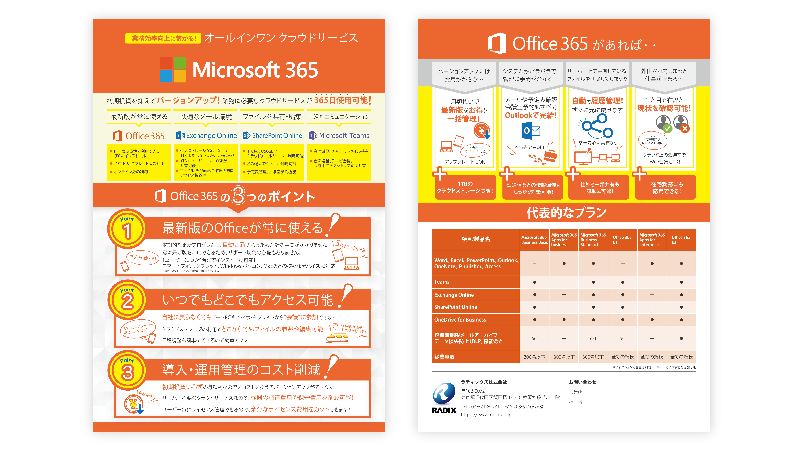

office365のフライヤー。営業担当者がテレアポで獲得した新規顧客や既存顧客へ売り込むための資料。既存の簡易資料を正規な資料にするために制作しました。
担当
デザイン
使用ツール
Illustrator
目的
顧客に直接会って営業かける時のカンペ。office365単体での売り込みではなく、社内ルーターなどの営業かける時のオプション商材の営業促進資料。
ターゲット
office365を未導入の新設法人など。
デザインについて
方向性などの指示はなかったので、元資料を参考に制作しました。元資料はパワポのイラストを多用していたので「なんとなく便利そう、あった方がいいよね」くらいのライトな資料と判断し、わかりやすさを重視しました。
office365はロゴがオレンジ系のカラーなので彩度高めのオレンジをメインカラーに採用。アイコン的なイラストを多く使いPOPな印象に仕上げ、専門知識の無い層にも受けやすくしました。
依頼者は今までの資料の方向性を残しつつ、更にわかりやすくなった資料に満足されてました。